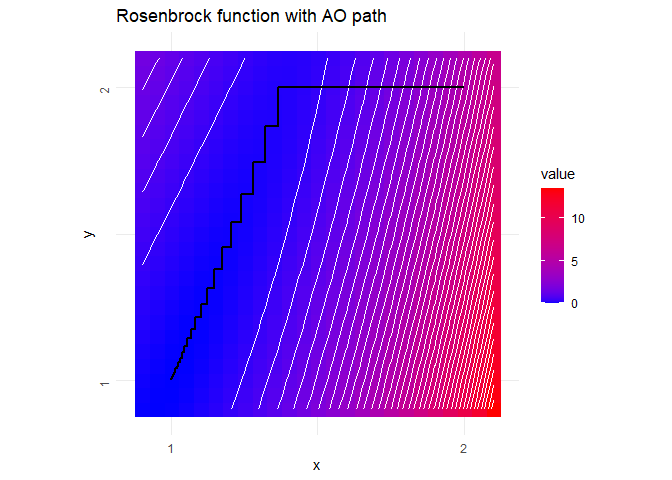

The ao package offers useRs easy access to alternating optimization.
Why?
Alternating optimization is an iterative procedure that optimizes a function by alternately performing restricted optimization over individual parameter subsets. Instead of tackling joint optimization directly, it breaks the problem down into simpler sub-problems. This approach can make optimization feasible when joint optimization is too difficult. For more details, please refer to the package vignette.
How?
You can install the released package version from CRAN with:
install.packages("ao")Then load the package via library("ao") and you should be ready to go. Here is a simple example of alternating minimization of the Rosenbrock function:
rosenbrock <- function(x) (1 - x[1])^2 + (x[2] - x[1]^2)^2The resulting optimization path …

… is obtained as follows:
ao(f = rosenbrock, initial = c(2, 2))
#> $estimate
#> [1] 1.000895 1.001791
#>
#> $value
#> [1] 8.016137e-07
#>
#> $details
#> iteration value p1 p2 b1 b2 seconds
#> 1 0 5.000000e+00 2.000000 2.000000 0 0 0.0000000000
#> 2 1 1.519238e-01 1.366025 2.000000 1 0 0.0020544529
#> 3 1 1.339744e-01 1.366025 1.866024 0 1 0.0009624958
#> 4 2 1.176778e-01 1.320824 1.866024 1 0 0.0013415813
#> 5 2 1.029278e-01 1.320824 1.744575 0 1 0.0009355545
#> 6 3 8.966402e-02 1.278883 1.744575 1 0 0.0013275146
#> 7 3 7.777546e-02 1.278883 1.635540 0 1 0.0009441376
#> 8 4 6.719114e-02 1.240415 1.635540 1 0 0.0013272762
#> 9 4 5.779955e-02 1.240415 1.538630 0 1 0.0009331703
#> 10 5 4.952339e-02 1.205560 1.538630 1 0 0.0013463497
#> 11 5 4.225482e-02 1.205560 1.453374 0 1 0.0009357929
#> 12 6 3.591491e-02 1.174366 1.453374 1 0 0.0013477802
#> 13 6 3.040344e-02 1.174366 1.379135 0 1 0.0009481907
#> 14 7 2.564430e-02 1.146792 1.379135 1 0 0.0013115406
#> 15 7 2.154801e-02 1.146792 1.315133 0 1 0.0009262562
#> 16 8 1.804492e-02 1.122712 1.315133 1 0 0.0015296936
#> 17 8 1.505832e-02 1.122712 1.260483 0 1 0.0009601116
#> 18 9 1.252724e-02 1.101923 1.260483 1 0 0.0015218258
#> 19 9 1.038836e-02 1.101923 1.214235 0 1 0.0009334087
#> 20 10 8.590837e-03 1.084167 1.214235 1 0 0.0032966137
#> 21 10 7.084101e-03 1.084167 1.175418 0 1 0.0009722710
#> 22 11 5.827377e-03 1.069149 1.175418 1 0 0.0035614967
#> 23 11 4.781578e-03 1.069149 1.143079 0 1 0.0009627342
#> 24 12 3.915156e-03 1.056558 1.143079 1 0 0.0035083294
#> 25 12 3.198754e-03 1.056558 1.116314 0 1 0.0050704479
#> 26 13 2.608707e-03 1.046082 1.116314 1 0 0.0096364021
#> 27 13 2.123531e-03 1.046082 1.094287 0 1 0.0010223389
#> 28 14 1.725945e-03 1.037424 1.094287 1 0 0.0011823177
#> 29 14 1.400576e-03 1.037424 1.076249 0 1 0.0010311604
#> 30 15 1.135093e-03 1.030310 1.076249 1 0 0.0012366772
#> 31 15 9.187038e-04 1.030310 1.061539 0 1 0.0010347366
#> 32 16 7.427825e-04 1.024492 1.061539 1 0 0.0014419556
#> 33 16 5.998755e-04 1.024492 1.049585 0 1 0.0009484291
#> 34 17 4.840462e-04 1.019754 1.049585 1 0 0.0011548996
#> 35 17 3.902161e-04 1.019754 1.039898 0 1 0.0009682178
#> 36 18 3.143566e-04 1.015907 1.039898 1 0 0.0011923313
#> 37 18 2.530454e-04 1.015907 1.032068 0 1 0.0009942055
#> 38 19 2.035803e-04 1.012794 1.032068 1 0 0.0011959076
#> 39 19 1.636760e-04 1.012794 1.025751 0 1 0.0009624958
#> 40 20 1.315375e-04 1.010279 1.025751 1 0 0.0011341572
#> 41 20 1.056496e-04 1.010279 1.020663 0 1 0.0009608269
#> 42 21 8.482978e-05 1.008251 1.020663 1 0 0.0011692047
#> 43 21 6.807922e-05 1.008251 1.016570 0 1 0.0010235310
#> 44 22 5.462405e-05 1.006619 1.016570 1 0 0.0011668205
#> 45 22 4.380882e-05 1.006619 1.013281 0 1 0.0010051727
#> 46 23 3.513011e-05 1.005307 1.013281 1 0 0.0011425018
#> 47 23 2.815916e-05 1.005307 1.010641 0 1 0.0009336472
#> 48 24 2.257018e-05 1.004252 1.010641 1 0 0.0011336803
#> 49 24 1.808332e-05 1.004252 1.008523 0 1 0.0009269714
#> 50 25 1.448872e-05 1.003406 1.008523 1 0 0.0011277199
#> 51 25 1.160399e-05 1.003406 1.006825 0 1 0.0009322166
#> 52 26 9.294548e-06 1.002728 1.006825 1 0 0.0011436939
#> 53 26 7.441548e-06 1.002728 1.005463 0 1 0.0009248257
#> 54 27 5.959072e-06 1.002184 1.005463 1 0 0.0011191368
#> 55 27 4.769667e-06 1.002184 1.004373 0 1 0.0007314682
#> 56 28 3.818729e-06 1.001748 1.004373 1 0 0.0011234283
#> 57 28 3.055717e-06 1.001748 1.003499 0 1 0.0009295940
#> 58 29 2.446111e-06 1.001399 1.003499 1 0 0.0011372566
#> 59 29 1.956863e-06 1.001399 1.002800 0 1 0.0009288788
#> 60 30 1.566279e-06 1.001119 1.002800 1 0 0.0011575222
#> 61 30 1.252688e-06 1.001119 1.002240 0 1 0.0009603500
#> 62 31 1.002554e-06 1.000895 1.002240 1 0 0.0011262894
#> 63 31 8.016137e-07 1.000895 1.001791 0 1 0.0007302761
#>
#> $seconds
#> [1] 0.08763027
#>
#> $stopping_reason
#> [1] "change in function value between 1 iteration is < 1e-06"Contact?
If you have a question, found a bug, want to request a feature, give feedback, or contribute, we would love to hear from you. Please file an issue on GitHub. 😊